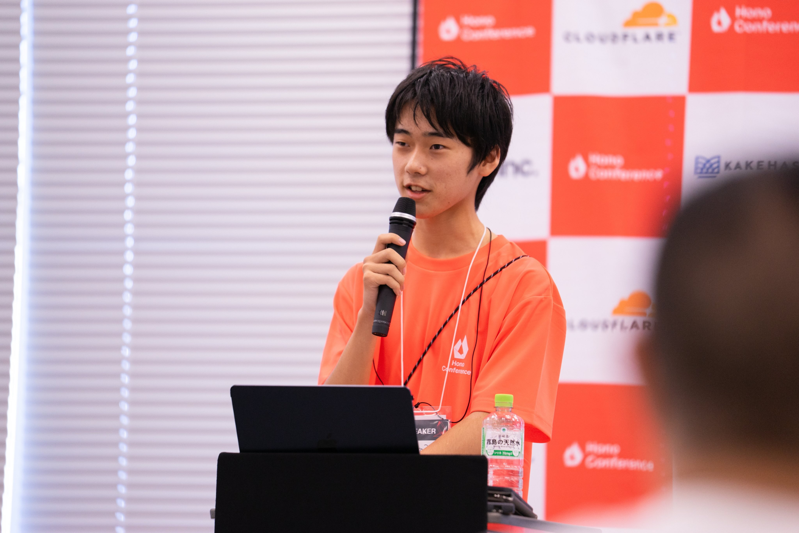
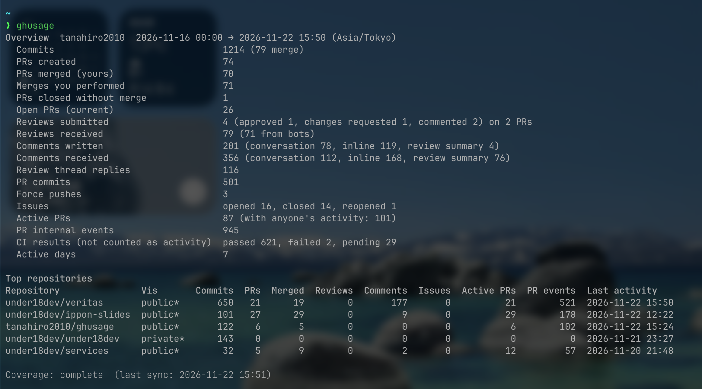

田中博悠 / tanahiro2010
Open Source Conference in Osaka 2027

前提知識
weekly や daily で期間ごとの活動を見るprs --details でPull Requestの詳細を確認reviews、comments、repos から切り口を変えるnpm install -g ghusage
ghusage sync
ghusage
遅い
GHUSAGE_LOG=ghusage_github=debug ghusage sync --format jsonapi.requestsを見る更新時刻が同じ ＋ 前回の取得がcomplete → 詳細取得を省略
更新時刻が違う / 前回の取得が不完全 → 取り直すインクリメンタルビルド的な考え方
REST: PR → check runs → statuses
GraphQL: PR + check runs
└ statusesがある場合だけREST呼ぶ回数を減らす 2,015 → 952
同時に動かす数を増やす 4 → 8ghusage weekly
ghusage daily5分以内の2回目は同期を省く
でも、差分はまだ15秒
0.5–2.2s /search/issues ×3
2.2–3.5s /graphql (PR)
3.3–10.5s /search/commits ×9 ← 直列で約7秒
10.5–11.9s /repos/*/commits (並列)
11.7–14.1s /repositories/<id>/commits ×6 (直列)total_count が分かる
↓
2〜10ページを同時に取得
↓
ページ順に並べて同期コミット検索 ───────────────┐
PR検索 ── repo一覧 ── default branchのコミット
└─ 必要になった時だけ合流同時に開始: PR検索 || コミット検索
PRのrepo一覧が必要: default-branch commits の取得だけ待つ
ページ数が分かった: 2ページ目以降をまとめて取得速くなった
しかし
incomplete_results: trueを返すことがあったPRのコミット行数 → PRクエリに相乗り
その他のコミット → --diff-stats で100件ずつ
2回目 → 取得済みを再利用JOINを直した
しかし
自分が作ったPR → 時間指標に過去履歴が要る
他の人のPR → 期間内の履歴だけ読むrusqlite::RowIndex::idx
columnName
_platform_strlen
_platform_memcmpクエリごと EventCols::of(&stmt)
各行 r.get(idx)同期中: 6/8 in parallel · 31 requests done
search commits p3 · 2.1s
octo/app commits p2 · 1.4s
repository list · 0.8s初回: GitHubから取得 → SQLiteに保存
次回: SQLiteから表示
ネットワークなし / offlineでも開けるCIも13分
cargo testがOSごとに6〜8分入力ファイルのハッシュを計算
↓
同じOSで成功済み？ ── Yes → 中身を省略して成功
└──────────── No → いつものCIテスト / release build 別ジョブで実行
fmt / 重い集計テスト Ubuntuに集約
Windows rust-lldを使う
dev push release buildをskipSQLite修正 約13分 → 約8分
test / buildを分離 8.3分 → 6.7分
OSの重複 + rust-lld 6.7分 → 5.0分
devでrelease buildなし 5.0分 → 3.0分以前: 遅いランナーで受信数が揺れる → CIを再実行
変更: サーバーの受信数ではなく、クライアントの再試行回数を検証同じランナーで 基準版 → PR版
中央値 / p95 / 変化率をコメントdev push test / clippy release buildなし
release PR test / clippy / release build
同じ入力 検証済みの結果を再利用PRAGMA cache_size = -32768; -- 32 MiBビルドが6秒短くなった
cargo build --timingsdev clean 44秒
release clean 62秒
aws-lc-sys dev 23秒 / release 27秒API 仕事の量を減らす
通信 待つ順番を変える
SQLite 読むデータと列を見直す
CI 実行する仕事を選ぶ